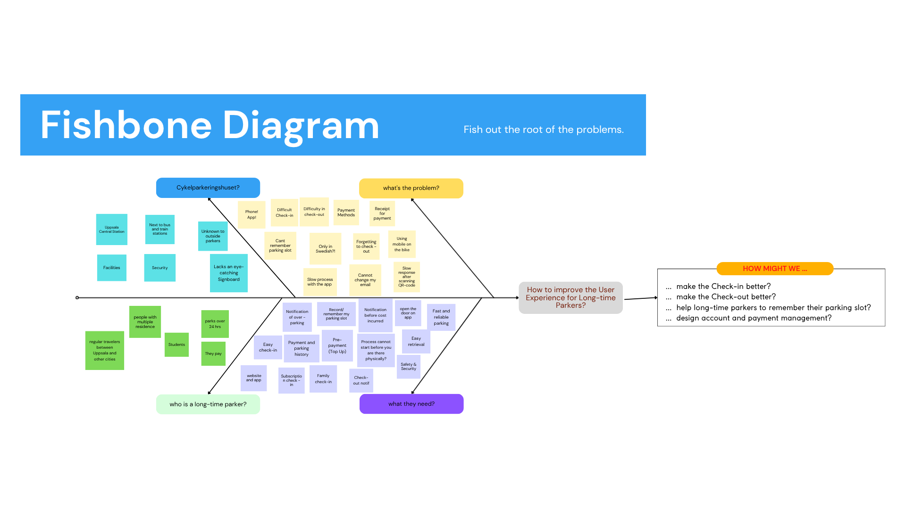
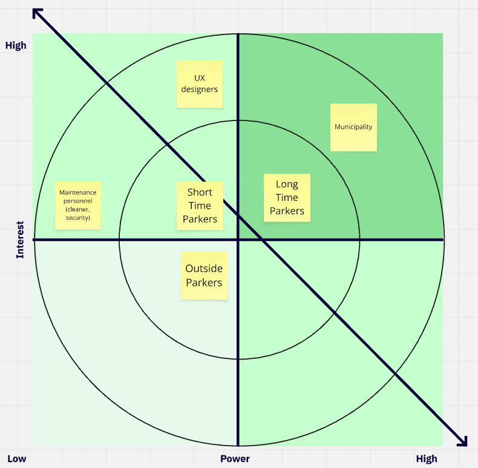
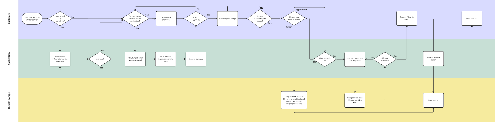
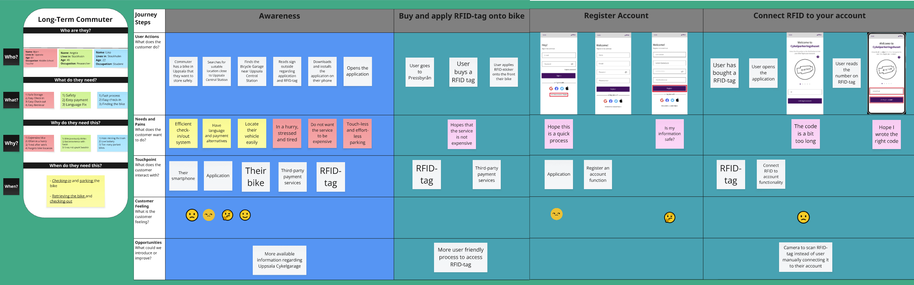
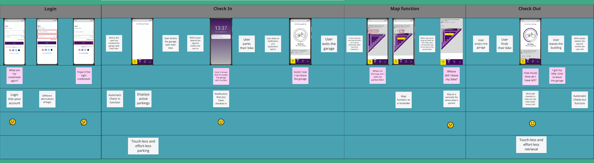
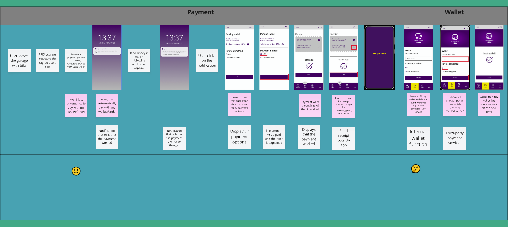
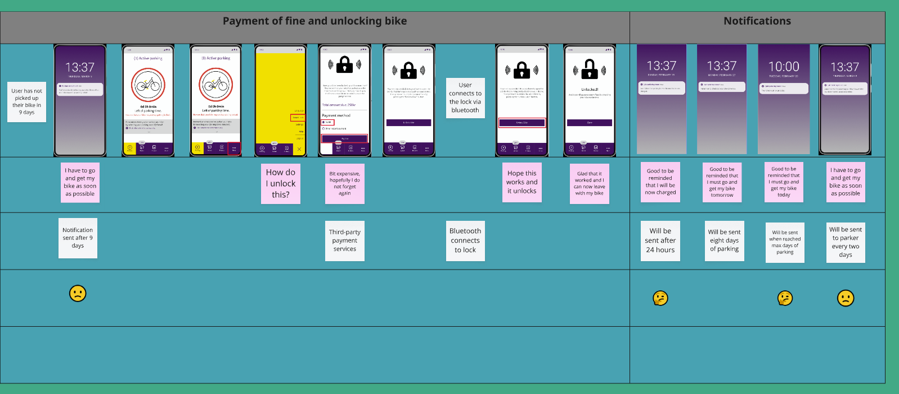

Uppsala built a staffed bike garage next to Centralstation to get more people biking around the city. The problem was the app you had to use with it. Feedback had been bad for a while, and since it was mandatory, that frustration spilled into everything else. This project picked one group to focus on, long-time parkers, meaning anyone storing a bike over 24 hours, and tried to actually fix things for them.
We used a Service Design approach and ran it through Scrum. There was a product backlog, a GANTT chart, and the work happened in iterations. Most of what we learned came from going to the garage itself and talking to people. We ran interviews on a few different occasions, first just to understand what was frustrating users, then later, once we had an early prototype, we watched people think aloud while using it. We also did a workshop with classmates using Worst Possible Idea and Brain Dumping, then sorted what came out of that into an Idea Portfolio.
From all of that we built two personas, a fishbone diagram, a power/interest grid, and a swimlane diagram showing the check-in process across three actors: Customer, Application, and Bicycle Garage. The journey map ties those four pieces together: awareness and registration, login and check-in, payment and wallet, and fine payment and notifications.
The biggest decision we made was to stop trusting people to check themselves in and out. We talked about an SMS-based system but dropped it. What we landed on was an RFID tag paired with a scanner at the entrance, so check-in and check-out happen automatically when a bike crosses the door. That closed the obvious loophole, people skipping check-in, or checking out early and leaving the bike behind, and it also gave the municipality something they didn't have before, an actual record of who's using the garage and for how long.
Testing went well. Most of the feedback was people wanting more of what was already there, more login options, more payment methods, rather than pushback on the idea itself. One person even asked for a fingerprint reader on the doors, which we hadn't considered. One thing I'll say honestly is that most of the people we interviewed weren't actually long-term parkers. That group was hard to recruit, so the findings lean more on short-term users than I would have liked.

Fishbone diagram working back from the core question

Power and interest stakeholder grid

Swimlane diagram for entering the garage

1. Awareness and registration

2. Login and check-in

3. Payment and wallet

4. Fine payment and notifications